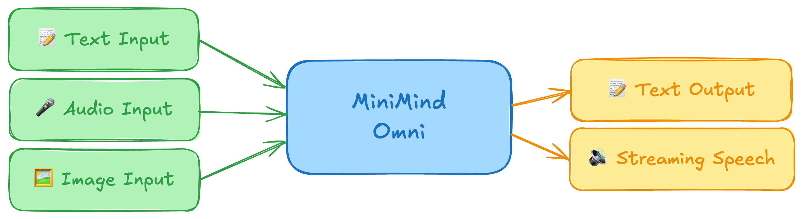

Learning Path
MiniMind-O 学习教程
这是一套面向动手学习者的多页面教程站：先补齐 Omni、音频 codec、视觉投影、Thinker/Talker 等基础，再沿着本仓库源码完成环境、训练、推理、WebUI 与实验复现。
0.1Bdense 主体量级
9 路8 路音频 + 1 路文本序列
24 kHzMimi 流式语音输出
mini/full入门与发布权重数据

怎么读这套教程
1. 建概念理解 Omni 和级联 ASR/LLM/TTS 的差异。
2. 跑起来准备 SenseVoice、SigLIP2、Mimi、CAMPPlus 与权重。
3. 读源码从 `MiniMindOmni.forward` 串起 Thinker 和 Talker。
4. 做实验用 mini 数据复现链路，再改训练模式或交互层。
每个页面都保留“关键文件”和“下一步”，所以你可以把它当成项目导览，也可以当成课程讲义。
页面导航
基础知识
Transformer、token、Mimi codebook、VAD、speaker embedding、projector 与训练术语。
环境与资源
依赖安装、外部模型下载、目录结构、CLI 与 WebUI 的最小 smoke test。
架构精读
Thinker/Talker 双路径、bridge layer、音频/视觉注入、MTP audio head。
数据与训练
Parquet 字段、9 路序列、text/audio loss、mini/full 训练管线。
推理与交互
文本、语音、图像、混合输入、音色克隆、Gradio 与电话模式 WebUI。
实验进阶
CER/WER、音色相似度、常见限制、可改造方向和阅读路线。